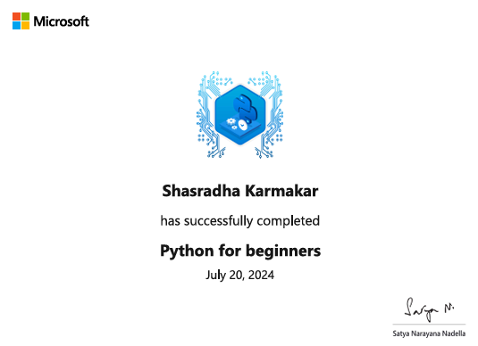
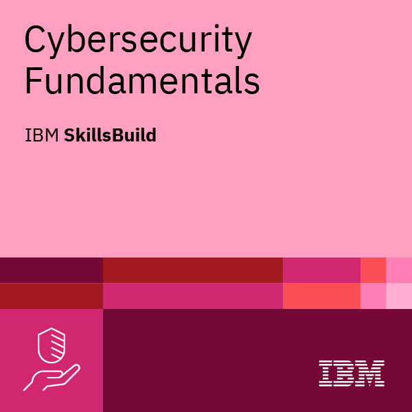
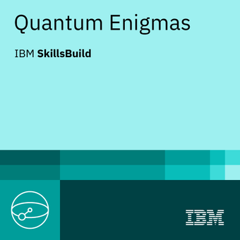

Student profile
Grounded, but moving fast.
- School: S.N. Memorial School, Asansol under CBSE.
- Current class: Class IX.
- Achievements: 2nd and 3rd place in science and SST exhibitions.
- Region: Panchgachia, Asansol, West Bengal, India.
Focused on security and systems while still keeping the energy playful, ambitious, and practical.
I am a passionate multi-skilled tech enthusiast who does not like staying boxed into one category. My focus areas include cybersecurity, robotics, web development, app development, game development, software engineering, electronics, electrical systems, photography, editing, content creation, influencing, and AI/ML engineering. I build because it is the fastest way to learn, improve, and create real impact.
This page is where the bigger story comes together: student life, hardware work, cybersecurity momentum, creative skills, platforms, business exposure, and what comes next.
The archive is not just about quantity. It shows comfort moving between devices, software, infrastructure, research, and public-facing products.
This is where the ranked lab work, bug bounty direction, and continued security learning come together in one focused section.
The ranked TryHackMe profile is useful because it is public, fast to understand, and backed by broader security work. It complements HackerOne activity, lab practice, networking study, Linux fundamentals, and long-term defensive skill building.
Formal learning helps validate the range: cloud, AI, robotics, cybersecurity, software, and even quantum topics all feed into the long-term vision.






Every system I create is part of a bigger vision to master technology from hardware to AI and build impactful innovations. If you want to collaborate, inspect the work further, or just connect, the contact page is ready.